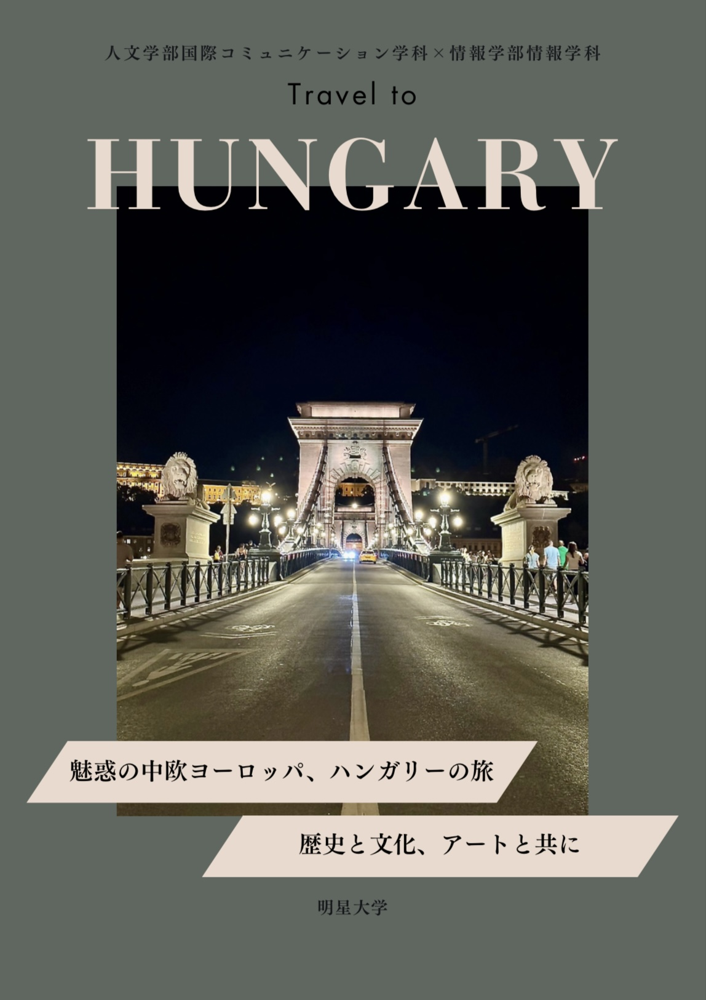
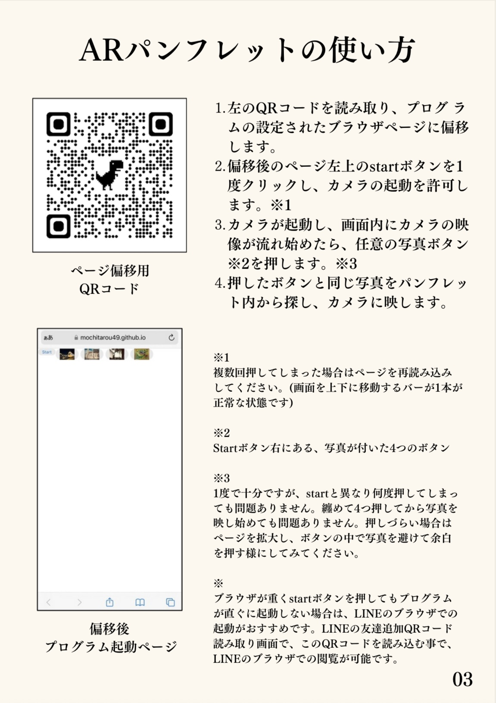
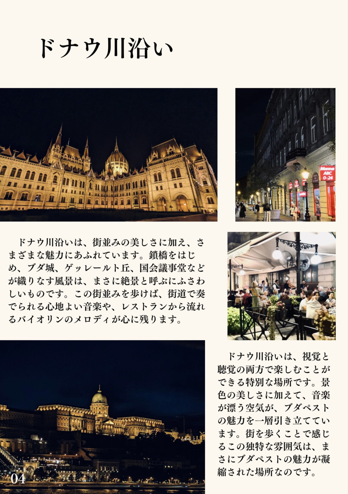

AR（拡張現実）技術を活用した、動画が動き出す観光パンフレット

ハンガリーでのフィールドワークをもとに、現地の魅力を伝えるためのパンフレットを制作しました。
単に情報を読むだけでなく、「スマホをかざすと現地の映像が流れる」というAR（拡張現実）技術を取り入れ、
紙媒体とデジタルコンテンツを融合させた新しい観光体験を提案しています。
このパンフレットは、Webブラウザ上で動作するARシステムと連携しています。
1. 専用のURLにアクセスしてカメラを起動
2. パンフレット内の写真を映す
3. 写真が動き出し、現地の動画が再生される
アプリのインストールは不要で、QRコードからすぐに体験できる手軽さを重視しました。

▲ 実際の操作説明ページ
ハンガリーの伝統的な建築美や、ドナウ川の雄大さが伝わるよう、写真は大きく配置しました。
また、余白を活かしたデザインにすることで、歴史の重厚感と現代的なスタイリッシュさを両立させています。
